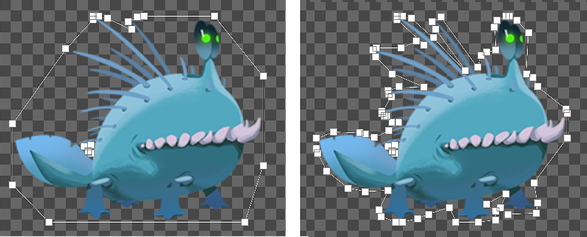
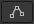

In a 2D project, Unity uses collisionA collision occurs when the physics engine detects that the colliders of two GameObjects make contact or overlap, when at least one has a Rigidbody component and is in motion. More info
See in Glossary geometry to determine if a spriteA 2D graphic objects. If you are used to working in 3D, Sprites are essentially just standard textures but there are special techniques for combining and managing sprite textures for efficiency and convenience during development. More info
See in Glossary collides with other sprites. Collision geometry can be one shape, for example a circle around the sprite, or a set of multiple shapes.
You can do either of the following:
Follow these steps:
If you select Polygon ColliderAn invisible shape that is used to handle physical collisions for an object. A collider doesn’t need to be exactly the same shape as the object’s mesh - a rough approximation is often more efficient and indistinguishable in gameplay. More info
See in Glossary 2D, by default Unity tries to create collision geometry that encompasses the opaque parts of the sprite.
Unity displays the collision geometry as a green outline in the SceneA Scene contains the environments and menus of your game. Think of each unique Scene file as a unique level. In each Scene, you place your environments, obstacles, and decorations, essentially designing and building your game in pieces. More info
See in Glossary view. To edit the collision geometry, refer to the Edit the collision geometry for one instance section.
To create custom collision geometry that Unity uses every time you create an instance of a sprite, use the Custom Physics Shape tab of the Sprite Editor window and a Polygon Collider 2D component.
Follow these steps:
In the Hierarchy window, select the sprite GameObject.
In the Inspector window, in the Sprite RendererA component that lets you display images as Sprites for use in both 2D and 3D scenes. More info
See in Glossary component, select Open Sprite Editor.
Select the Custom Physics Shape tab in the top-left dropdown. Unity displays the Outline Tools overlay.
Select Generate to automatically generate an outline that follows the opaque parts of the sprite. Unity displays the outline in white. Each point is a vertex of a collision shape.
You can also create one or more outlines manually by clicking the sprite then dragging a rectangle.
Edit the geometry if you need to. For more information, refer to Custom Physics Shape tab reference for the Sprite Editor window.
To change how closely the geometry follows the opaque parts of the sprite, adjust the Outline Detail and Alpha Tolerance properties, then regenerate the outline.
To save the geometry, select Apply in the toolbarA row of buttons and basic controls at the top of the Unity Editor that allows you to interact with the Editor in various ways (e.g. scaling, translation). More info
See in Glossary.
Add the sprite to the scene.
In the Inspector window of the sprite GameObject, select Add Component, then Physics 2D > Polygon Collider 2D.

Unity now uses the collision geometry for all new instances of the sprite if you add a Polygon Collider 2D component.
Note: Unity doesn’t automatically update existing GameObjects with the collision geometry. To update an existing Polygon Collider 2D component, right-click the title of the collider component in the Inspector window, then select Reset.
For more information, refer to Custom Physics Shape tab reference for the Sprite Editor window.
To edit the auto-generated collision geometry of a single sprite instance, or override the collision geometry from the Custom Physics Shape tab, use the Edit Collider

button.Follow these steps:
To edit the geometry, do the following:
Note: Editing the collision geometry of a single instance doesn’t change the collision geometry in the Custom Physics Shape tab of the Sprite Editor window.